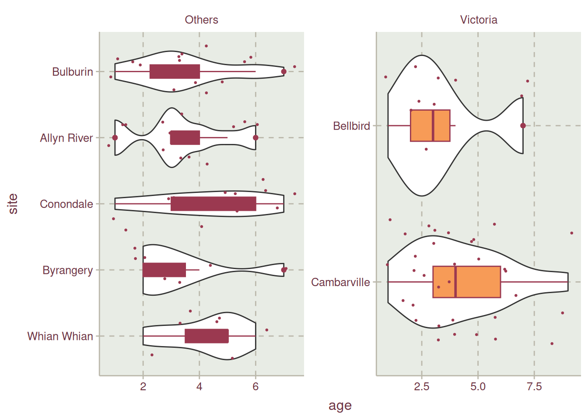
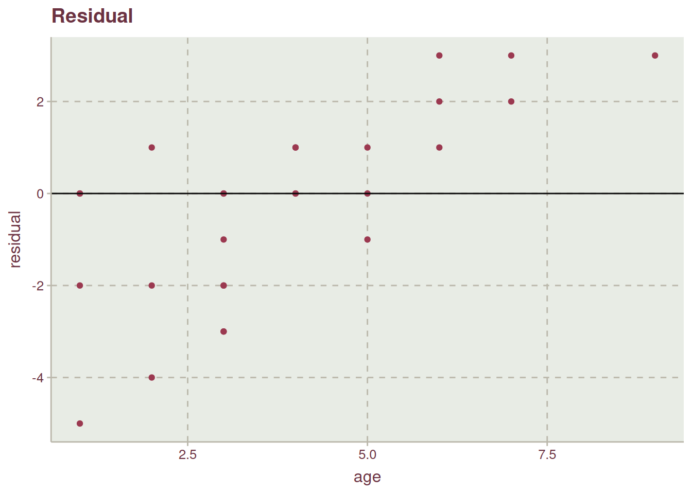

Show the code
psm <- DAAG::possum |> janitor::clean_names() |>
remove_rownames() |> as_tibble()This project aims to predict the age of possums collected from three different sites in Australia using linear regression.. The sites are Victoria, New South Wales and Queensland. New South Wales and Queensland are compressed into a single category “Others”. The data is available in the DAAG R package developed by Maindonald, Braun, and Braun (2015).

The data is having the following properties:
| S/N | Variable name | Definition |
|---|---|---|
| 1. | case | Observation number |
| 2. | site | The site number where the possum was trapped. |
| 3. | Pop | The site as Vic (Victoria) or Other (New South Wales and Queensland) |
| 4. | sex | Gender, either m (male) or f (female). |
| 5. | age | Age of possum |
| 6. | hdlngth | Head length, in mm. |
| 7. | skullw | Skull width, in mm. |
| 8. | totlngth | Total length, in cm. |
| 9. | taill | Tail length, in cm. |
| 10. | footlgth | Foot length in mm |
| 11. | earconch | Ear conch length in mm |
| 12. | eye | distance from medial canthus to lateral canthus of right eye |
| 13. | chest | chest girth (in cm) |
| 14. | belly | belly girth (in cm) |
psm <- DAAG::possum |> janitor::clean_names() |>
remove_rownames() |> as_tibble()After getting any data, the first thing to do is trying to understand the data
skimr::skim_without_charts(psm)| Name | psm |
| Number of rows | 104 |
| Number of columns | 14 |
| _______________________ | |
| Column type frequency: | |
| factor | 2 |
| numeric | 12 |
| ________________________ | |
| Group variables | None |
Variable type: factor
| skim_variable | n_missing | complete_rate | ordered | n_unique | top_counts |
|---|---|---|---|---|---|
| pop | 0 | 1 | FALSE | 2 | oth: 58, Vic: 46 |
| sex | 0 | 1 | FALSE | 2 | m: 61, f: 43 |
Variable type: numeric
| skim_variable | n_missing | complete_rate | mean | sd | p0 | p25 | p50 | p75 | p100 |
|---|---|---|---|---|---|---|---|---|---|
| case | 0 | 1.00 | 52.50 | 30.17 | 1.0 | 26.75 | 52.50 | 78.25 | 104.0 |
| site | 0 | 1.00 | 3.62 | 2.35 | 1.0 | 1.00 | 3.00 | 6.00 | 7.0 |
| age | 2 | 0.98 | 3.83 | 1.91 | 1.0 | 2.25 | 3.00 | 5.00 | 9.0 |
| hdlngth | 0 | 1.00 | 92.60 | 3.57 | 82.5 | 90.68 | 92.80 | 94.73 | 103.1 |
| skullw | 0 | 1.00 | 56.88 | 3.11 | 50.0 | 54.98 | 56.35 | 58.10 | 68.6 |
| totlngth | 0 | 1.00 | 87.09 | 4.31 | 75.0 | 84.00 | 88.00 | 90.00 | 96.5 |
| taill | 0 | 1.00 | 37.01 | 1.96 | 32.0 | 35.88 | 37.00 | 38.00 | 43.0 |
| footlgth | 1 | 0.99 | 68.46 | 4.40 | 60.3 | 64.60 | 68.00 | 72.50 | 77.9 |
| earconch | 0 | 1.00 | 48.13 | 4.11 | 40.3 | 44.80 | 46.80 | 52.00 | 56.2 |
| eye | 0 | 1.00 | 15.05 | 1.05 | 12.8 | 14.40 | 14.90 | 15.72 | 17.8 |
| chest | 0 | 1.00 | 27.00 | 2.05 | 22.0 | 25.50 | 27.00 | 28.00 | 32.0 |
| belly | 0 | 1.00 | 32.59 | 2.76 | 25.0 | 31.00 | 32.50 | 34.12 | 40.0 |
Table 1 (a) shows that data was collected on 104 possum’s. There are 2 categorical variables, pop and sex, but this should be three as site should also be a categorical variable (check below to see transformation of this variable). The case variable is not needed and can be removed. There are missing data in age and footlgth variables, Table 1 (b). We can remove this missing data points as it’s not a lot, Figure 1.
visdat::vis_miss(psm)psm <- psm |>
drop_na() |>
select(-case) |>
mutate(
site = factor(
site,
levels= 1:7,
labels = c("Cambarville", "Bellbird", "Whian Whian",
"Byrangery", "Conondale", "Allyn River", "Bulburin")
)
)To understand the data, we do an EDA for targets and predictors.
psm |>
summarize(
median_age = median(age),
mean_age = round(mean(age), 2),
minimum_age = min(age),
maximum_age = max(age)
) |> kable(
col.names = c("Median", "Mean", "Min", "Max"),
align = "lccr",
caption = "Measure of Central Tendency for Age"
)| Median | Mean | Min | Max |
|---|---|---|---|
| 3 | 3.82 | 1 | 9 |
Table 2 shows a spread mean and median value for age which might indicates that the distribution is skewed or bimodal, see Figure 2.
psm |>
ggplot(aes(age)) +
geom_density(col = "#ab2493") +
labs(
x = "Age",
y = "Density",
title = "Age variable showing a bimodal distribution"
)psm |>
mutate(
pop = case_when(
pop == "Vic" ~ "Victoria",
.default = "Others"
)
) |>
ggplot(aes(pop)) +
geom_bar(fill = "cadetblue4") +
expand_limits(y = c(0, 70)) +
labs(
x = "Population",
y = "Frequency",
title = "Population of Registered Possums According to Regions"
) +
theme(plot.title = element_text(face = "bold", hjust = .5))
psm |>
count(site) |>
arrange(n) |>
ggplot(aes(n, fct_reorder(site, n))) +
geom_bar(
stat = "identity",
fill = "coral2"
) +
labs(
y = "Sites",
x = "Count",
title = "Population of Registered Possums According to Sites"
) +
theme(
plot.title = element_text(face = "bold", hjust = .5)
)More possums were recorded at the region labelled Other Figure 3. We should recall that Other is the combination of records from New South Wales and Queensland. For the sites where trap where placed within the regions, Cambarville have the highest record of possums with more than half the second site, Bulburin.
psm_long <- psm |>
pivot_longer(
cols = hdlngth:belly,
names_to = "variables",
values_to = "values"
)
psm_long |>
summarize(
.by = variables,
mean = mean(values),
median = median(values),
minimum = min(values),
maximum = max(values)
) |>
kable(
col.names = c("Variable", "Mean", "Median", "Minimum", "Maximum"),
align = "lcccr"
)| Variable | Mean | Median | Minimum | Maximum |
|---|---|---|---|---|
| hdlngth | 92.73069 | 92.9 | 82.5 | 103.1 |
| skullw | 56.96040 | 56.4 | 50.0 | 68.6 |
| totlngth | 87.26931 | 88.0 | 75.0 | 96.5 |
| taill | 37.04951 | 37.0 | 32.0 | 43.0 |
| footlgth | 68.39802 | 67.9 | 60.3 | 77.9 |
| earconch | 48.13366 | 46.8 | 41.3 | 56.2 |
| eye | 15.05049 | 14.9 | 12.8 | 17.8 |
| chest | 27.06436 | 27.0 | 22.0 | 32.0 |
| belly | 32.63861 | 32.5 | 25.0 | 40.0 |
Table 3 shows the measure of central tendency. The difference between median and mean is minimal indicating a normal distribution.
additional_colors <- c("#af4242", "#535364", "#FFC300")
set_swatch(c(unique(swatch()), additional_colors))
psm_long |>
ggplot(aes(values, col = variables)) +
geom_density() +
scale_color_discrete() +
facet_wrap(~variables, scales = "free") +
theme(legend.position = "none")All the numerical variables are normally distributed Figure 4. earconch, footlgth, taill, and totlngth are bimodals.
psm |>
mutate(
pop = case_when(
pop == "Vic" ~ "Victoria",
.default = "Others"
)
) |>
ggplot(aes(site, age, fill = pop, col = "#000")) +
geom_violin(inherit.aes = FALSE, aes(site, age)) +
geom_boxplot(position = "dodge", width = .2) +
geom_jitter(size = .5) +
facet_wrap(~pop, scales = "free") +
coord_flip() +
theme(legend.position = "none")Warning: The `scale_name` argument of `discrete_scale()` is deprecated as of ggplot2
3.5.0.
ggcorr(
psm,
geom = "text",
low = "#219123",
mid = "#e09263",
high = "#8f0123"
)The correlation of the variables to age is low with the maximum correlation being with belly, Figure 5. However, there’s high correlation between the predictors and to prevent collinearity we could consider employing Principal Component Analysis to transform correlated predictors to uncorrelated predictor. More information on the relationships existing between the variables can be seen in Figure 6.
ggpairs(psm)Figure 2 shows how older possums from age 8 to 9 are not well represented in the data. A stratified data sharing technique will be employed to account for less represented age data point.
set.seed(124)
psm_split <- initial_split(psm, prop = .75, strata = age)
psm_train <- training(psm_split)If we check Figure 7, possums that are 8 and 9 years old are represented.
psm_train |>
count(age) |>
ggplot(aes(factor(age), n)) +
geom_col() +
geom_text(
aes(label = n),
nudge_y = .5,
col = "red"
) +
labs(
x = "Age",
y = "Count",
title = "Age Frequency in Training Data"
)To prevent data leaking, the data will be resampled to have a validation-training data in 10 folds using the k-folds resampling.
set.seed(124)
psm_folds <- vfold_cv(psm_train, v = 10)We will use linear regression to predict the age of possums
lm_spec <- linear_reg() |>
set_engine("lm")
lm_spec |> translate()Linear Regression Model Specification (regression)
Computational engine: lm
Model fit template:
stats::lm(formula = missing_arg(), data = missing_arg(), weights = missing_arg())Three preprocessing will be added to formular specification. These are:
These preprocesses are added as presented down to the last step which is creating dummy variables for categorical data.
psm_rec_1 <- recipe(age ~ ., data = psm_train)
psm_rec_2 <- psm_rec_1 |>
step_normalize(all_numeric_predictors()) |>
step_center(all_numeric_predictors()) |>
step_scale(all_numeric_predictors())
psm_rec_3 <- psm_rec_2 |>
step_pca(all_numeric_predictors())
psm_rec_4 <- psm_rec_3 |>
step_dummy(all_factor_predictors()) The result from applying the whole steps is shown in Table 4
psm_rec_4 |>
prep() |>
juice() |>
head() |>
kable()| age | PC1 | PC2 | PC3 | PC4 | PC5 | site_Bellbird | site_Whian.Whian | site_Byrangery | site_Conondale | site_Allyn.River | site_Bulburin | pop_other | sex_m |
|---|---|---|---|---|---|---|---|---|---|---|---|---|---|
| 2 | -0.0683403 | -1.343005 | 0.1629385 | -0.3007284 | -0.5391333 | 0 | 0 | 0 | 0 | 0 | 0 | 0 | 0 |
| 1 | 0.5255119 | -2.047798 | -0.8395109 | 0.1766334 | -0.0667790 | 0 | 0 | 0 | 0 | 0 | 0 | 0 | 0 |
| 2 | 0.5932377 | -1.959162 | 0.3740650 | 0.6887651 | 0.0693626 | 0 | 0 | 0 | 0 | 0 | 0 | 0 | 1 |
| 2 | -0.2120375 | -2.211136 | 1.7088223 | -0.3387357 | -0.0931182 | 0 | 0 | 0 | 0 | 0 | 0 | 0 | 1 |
| 2 | -2.7210452 | -1.389487 | 0.2290110 | 0.7561382 | 1.2385934 | 0 | 0 | 0 | 0 | 0 | 0 | 0 | 0 |
| 2 | -1.6707158 | -1.652564 | 0.3608677 | -0.3541424 | -0.3539676 | 0 | 0 | 0 | 0 | 0 | 0 | 0 | 0 |
The numerical predictors has been reduced to 5 variables.
psm_wf_set <- workflow_set(
preproc = list(
"formula" = psm_rec_1,
"normalized" = psm_rec_2,
"pca" = psm_rec_3,
"dummy" = psm_rec_4
),
models = list("ols" = lm_spec),
cross = TRUE
)
psm_wf_set# A workflow set/tibble: 4 × 4
wflow_id info option result
<chr> <list> <list> <list>
1 formula_ols <tibble [1 × 4]> <opts[0]> <list [0]>
2 normalized_ols <tibble [1 × 4]> <opts[0]> <list [0]>
3 pca_ols <tibble [1 × 4]> <opts[0]> <list [0]>
4 dummy_ols <tibble [1 × 4]> <opts[0]> <list [0]>psm_mod <- psm_wf_set |>
workflow_map(
"fit_resamples",
resamples = psm_folds,
seed = 124
)
collect_metrics(psm_mod) |> kable()| wflow_id | .config | preproc | model | .metric | .estimator | mean | n | std_err |
|---|---|---|---|---|---|---|---|---|
| formula_ols | Preprocessor1_Model1 | recipe | linear_reg | rmse | standard | 1.7863370 | 10 | 0.1001647 |
| formula_ols | Preprocessor1_Model1 | recipe | linear_reg | rsq | standard | 0.2506679 | 10 | 0.0642785 |
| normalized_ols | Preprocessor1_Model1 | recipe | linear_reg | rmse | standard | 1.7863370 | 10 | 0.1001647 |
| normalized_ols | Preprocessor1_Model1 | recipe | linear_reg | rsq | standard | 0.2506679 | 10 | 0.0642785 |
| pca_ols | Preprocessor1_Model1 | recipe | linear_reg | rmse | standard | 1.7590867 | 10 | 0.1122277 |
| pca_ols | Preprocessor1_Model1 | recipe | linear_reg | rsq | standard | 0.1970622 | 10 | 0.0555754 |
| dummy_ols | Preprocessor1_Model1 | recipe | linear_reg | rmse | standard | 1.7590867 | 10 | 0.1122277 |
| dummy_ols | Preprocessor1_Model1 | recipe | linear_reg | rsq | standard | 0.1970622 | 10 | 0.0555754 |
Table 5 shows no difference in the model between dummy_ols and pca_ols which is different from using the formula without preprocessing, formula_ols and normalized_ols. This presented visually in Figure 8
collect_metrics(psm_mod) |>
filter(.metric == "rmse") |>
select(wflow_id, mean, std_err) |>
mutate(
ymax = mean + std_err,
ymin = mean - std_err
) |>
ggplot(aes(wflow_id, mean, col = wflow_id)) +
geom_pointrange(aes(ymin = ymin, ymax =ymax)) +
labs(
x = "Preproc",
title = "RMSE of Possum Linear Regression Model for 3 Preprocessor"
) +
theme(legend.position = "none")We can use either of pca_ols or dummy_ols as they have the lowest mean.
psm_pca_mod <- psm_mod |>
extract_workflow(id = "pca_ols")
psm_pca_mod ══ Workflow ════════════════════════════════════════════════════════════════════
Preprocessor: Recipe
Model: linear_reg()
── Preprocessor ────────────────────────────────────────────────────────────────
4 Recipe Steps
• step_normalize()
• step_center()
• step_scale()
• step_pca()
── Model ───────────────────────────────────────────────────────────────────────
Linear Regression Model Specification (regression)
Computational engine: lm psm_model <- last_fit(
psm_pca_mod,
split = psm_split
)psm_model |>
collect_predictions() |>
select("prediction" =.pred, age) |>
mutate(
prediction = ceiling(prediction),
residual = age - prediction
) |>
ggplot(
aes(age, residual)
) +
geom_point() +
geom_hline(aes(yintercept = 0), col = "gray3") +
ggtitle("Residual")
While the points are fairly distributed along the y axis and x axis, the effect of having little representative from the population for old-aged possum, age 9 and 8 can be see. The lack of points on the lower-right side of the plot is a good of indication.
The features contributing the most to the model are shown in Figure 9
psm_model |>
extract_fit_parsnip() |>
vip::vip(
num_features = 10,
geom = "col"
) +
ggtitle("Feature Importance")While this a good use of linear regression, the robustness of the model would have been helped if underrepresented data points are available. By the time of writing this blog post, the author with intentions to use only SLR is having no feature engineering method to account for the age variable that has been discretized. A resampling technique such as Monte Carlo or bootstrapping is an approach that could help with the model rather than the use of k-fold resampling method.